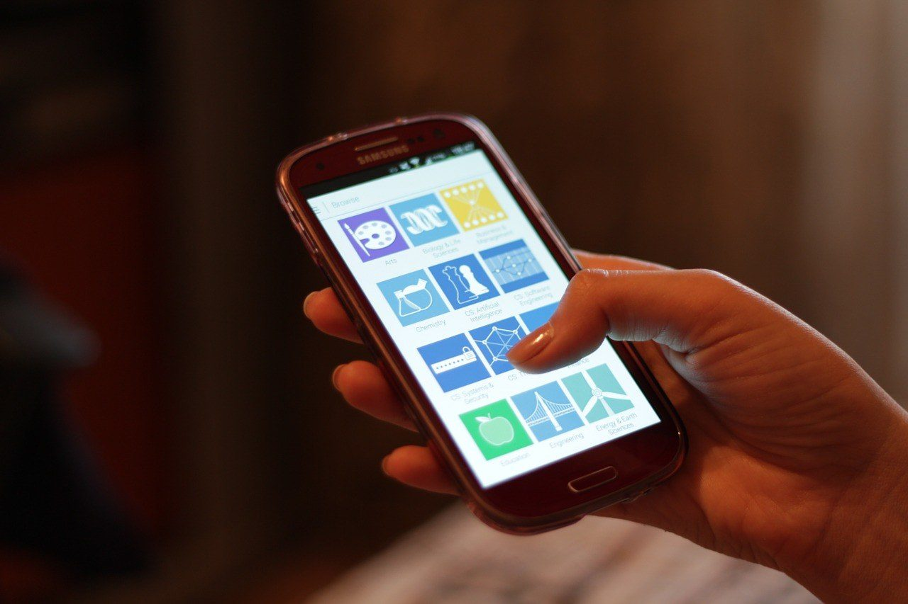

Unit 1 · Lesson 3
Input, output and software
How data gets in and out of the machine, and the programs that make the hardware useful: the operating system above all.
What the test will ask
After this lesson you should be able to:
- Name input devices (manual and direct data entry, including sensors) and output devices (for people and for the physical world: actuators), and devices that are both.
- Classify software: system software (operating system, utilities, drivers, compilers/interpreters) vs application software (general purpose, specialist, bespoke, apps).
- List the jobs of an operating system and the four kinds of interface (CLI, GUI, touch, voice).
- Describe what happens when you press the power button (POST, BIOS/UEFI, boot order, bootloader, kernel, login).
- Explain processes and multitasking, virtual memory, file systems and permissions.
- Compare Windows, macOS, Linux, Android and iOS and define kernel, shell, distribution.
- Explain what a driver, a utility, a compiler and an interpreter are.
- Tell proprietary, open-source and 'free' software apart.
The story
Everything a computer knows about the world arrives through an input device. Some you operate: the keyboard (laid out in 1873 to stop typewriter arms jamming), the mouse (a wooden block with two wheels in 1964, shown to the world in 1968 in 'the mother of all demos'), the touchscreen, the microphone, the camera. Some collect data by themselves: the barcode reader (the first product ever scanned was a packet of chewing gum, on 26 June 1974), the fingerprint reader, and sensors of every kind. A sensorised insole is an input device: pressure sensors under the foot send numbers to a computer smaller than a coin.


Information leaves through an output device: a screen, a printer, a speaker, a vibration. And, the kind people forget, outputs for the physical world: motors, lights, valves. A self-driving car's outputs are its steering motor and its brakes; the Tech Club bin's output is one servo. Some devices are both: a touchscreen, a headset, a 3D printer (a file in, an object out).
Between the hardware and you sits the software, in two families. System software runs the computer: the operating system, the little maintenance utilities, the drivers that let the OS talk to a printer, and the compilers and interpreters that turn human-written code into something the chip understands. Application software does jobs for you: Word, Chrome, Minecraft, the insole app.

The operating system is the boss of the hardware. It shares the processor between programs, hands out memory, organises files, talks to devices, keeps users apart, and draws what you see. Interfaces have changed four times: typing commands (MS-DOS, 1981), windows and a mouse (Macintosh 1984, Windows 1985), touch (iPhone 2007), voice (Siri 2011). On 25 August 1991 a Finnish student called Linus Torvalds posted that he was writing an OS 'just for fun'; Linux now runs most of the internet, every Android phone and every one of the 500 fastest computers in the world.
And the news: on 14 October 2025 Microsoft stopped supporting Windows 10. Hundreds of millions of working PCs cannot run Windows 11, and their owners must choose: pay for updates, buy a new computer, or install Linux for free.
The notes
Everything from the lesson, in order. This is the part to study.
Input devices
An input device sends data into the computer.
| Family | Examples | Note |
|---|---|---|
| Manual input (a person operates it) | keyboard, mouse, touchpad, touchscreen, microphone, camera/webcam, scanner, game controller, graphics tablet | the user decides what goes in |
| Direct data entry (the machine collects data) | barcode / QR reader, RFID/NFC, magnetic stripe, biometric readers (fingerprint, face) | fast and accurate, fewer typing errors |
| Sensors | temperature, pressure, light, motion (accelerometer), GPS, proximity | the computer senses the world; a sensor's reading is turned into a number by an analogue-to-digital converter |
Your phone has more than ten input devices: touchscreen, cameras, microphones, accelerometer, gyroscope, compass, GPS, light sensor, proximity sensor, fingerprint/face reader, NFC.
Output devices
An output device presents information from the computer, to a person or to the world.
| For people | For the physical world (actuators) | Both input and output |
|---|---|---|
| monitor/screen (LCD, OLED; resolution, refresh rate), printer (inkjet, laser, 3D), speakers/headphones, projector, haptic vibration | motors and servos, LEDs and lights, valves, pumps, heaters: the outputs of robots, cars, washing machines, the Arduino bin | touchscreen (touch in, picture out), headset (mic in, sound out), smart speaker, 3D printer (file in, object out) |
Software: the family tree
| System software (runs the computer) | Application software (does jobs for you) |
|---|---|
| Operating system: Windows, macOS, Linux, Android, iOS | General purpose: Word, Excel, PowerPoint, Chrome |
| Utilities: antivirus, backup, compression (ZIP), disk clean-up, defragmentation | Specialist: Photoshop, AutoCAD, Fusion 360, accounting software |
| Device drivers: make a printer or a graphics card work with the OS | Bespoke / custom: written for one client (e.g. a hospital booking system, the insole app) |
| Compilers and interpreters: turn code into machine instructions (Python's interpreter is system software) | Apps and web apps: Spotify, WhatsApp, Google Docs, games |
Where does a game go? Application. Where does Python go? System software: it is a tool that runs programs; the program you write with it is the application.
The operating system: six jobs
- Processor: shares the CPU between running programs (multitasking).
- Memory: decides which program gets which part of RAM.
- Files: folders, names, saving and loading, permissions.
- Devices: talks to hardware through drivers.
- Security: users, passwords, updates, permissions.
- Interface: what you see and touch.
| Interface | Since | Example |
|---|---|---|
| CLI, command line | 1981 | MS-DOS, the terminal, PowerShell |
| GUI: windows, icons, menus, pointer | 1984–85 | Macintosh, Windows |
| Touch and gestures | 2007 | iPhone, every phone and tablet |
| Voice | 2011 | Siri, Alexa, Google Assistant |
An unsupported OS (Windows 10 after 14 October 2025) still works but gets no security updates: every new hole stays open. Options: paid extended updates, a new PC, or Linux.
What happens when you press the power button
- Power on
- Firmware (BIOS/UEFI) + POST
- Boot device
- Bootloader
- Kernel
- Login and shell
- Power on: the PSU stabilises; the CPU starts executing from a fixed address in ROM.
- Firmware: the BIOS (old, text) or UEFI (modern, graphical, Secure Boot) runs the POST (power-on self-test): counts RAM, finds keyboard, graphics, drives; beeps if something is missing. Press F2/DEL here to enter the settings.
- Boot device: the firmware follows the boot order (SSD, USB, network). A Linux USB stick 'takes over' a PC because the firmware tries USB first.
- Bootloader: a tiny program (Windows Boot Manager, GRUB) loads the kernel.
- Kernel: the core of the OS is copied into RAM, takes control of CPU, memory and devices, starts drivers and services.
- Login and shell: the user interface appears. The desktop is the 'shell' around the kernel.
'Boot' comes from 'bootstrap': the computer must load the program that loads programs, starting from nothing. Sleep keeps RAM powered; hibernate saves RAM to disk and skips the last steps; 'restart' does the full boot, 'shut down' on Windows often does not.
Inside the OS: processes, memory, files
- Process: a running program with its own protected memory; it can contain several threads (Chrome: one process per tab, so one crashed tab does not kill the browser).
- Scheduler / multitasking: each thread gets a time slice of a few milliseconds on a core, then the next; 500 threads on 8 cores look simultaneous. 'Not responding' = the process stopped answering the OS.
- Virtual memory: programs see pretend addresses; the OS maps them to real RAM in pages (4 KB). One process cannot read another's memory, so one crash does not take down the OS. When RAM is full, pages go to the pagefile / swap on the SSD: slow, hence 'buy more RAM'.
- File system: how bytes on a drive become files and folders. NTFS (Windows), APFS (Apple), ext4 (Linux), exFAT/FAT32 (USB sticks: works everywhere, no permissions; FAT32 cannot hold a file over 4 GB).
- Permissions: owner / group / everyone × read / write / execute: who may open your file on the network share.
- Deleting removes the directory entry first; the bytes stay until overwritten (recovery is possible; wipe a drive before selling a laptop).
Which operating system?
| Windows | macOS | Linux | Android | iOS | |
|---|---|---|---|---|---|
| Maker | Microsoft | Apple | community (Linus Torvalds, 1991) | Apple | |
| Licence | proprietary, paid | proprietary, with Apple hardware | open source, free | open-source core + Google services | proprietary |
| Runs on | almost any PC | Macs only | anything: PCs, servers, Raspberry Pi, phones | most phones, TVs, cars | iPhone, iPad |
| Strong at | games, business, software choice | creative work, battery, integration | servers, cloud, supercomputers, coding | choice, price, customisation | privacy, long updates, polish |
| Weak at | malware target, licence cost | price, closed hardware | commercial software, learning curve | fragmentation, slow updates | closed ecosystem, price |
Shares (2025, approx.): desktop Windows ~70 %, macOS ~15 %, Linux ~4 %, ChromeOS ~2 %; mobile Android ~70 %, iOS ~29 %. Servers and all TOP500 supercomputers: Linux.
Kernel = the core that manages CPU, memory, devices. Shell = the interface you see (the Windows desktop, a terminal). Distribution = kernel + tools + desktop packaged together (Ubuntu, Mint, Raspberry Pi OS).
Utilities, drivers, compilers and interpreters
| What it does | |
|---|---|
| Antivirus | scans files and memory for malware |
| Backup | copies your files somewhere safe, automatically (rule 3-2-1: three copies, two kinds of storage, one elsewhere) |
| Compression | ZIP makes files smaller to send or store |
| Clean-up / defragmentation | removes junk; defrag reorganises an HDD (useless on an SSD) |
| Device driver | the translator between the OS and one device; without it the printer is just a box |
| Compiler | translates the whole program once into machine code: fast, you get an .exe (C, C++) |
| Interpreter | translates and runs the program line by line: easy to test, slower, portable (Python) |
A Python program runs on Windows, a Mac and a Raspberry Pi without changes because the interpreter hides the hardware.
Application software and licences
- Proprietary: you buy or subscribe; the code is secret (Office, Photoshop, Windows).
- Open source: the code is public and usually free to use and change (LibreOffice, GIMP, Blender, Python, Linux).
- 'Free': free of charge but closed; you pay with data and advertising (Chrome, Spotify's free tier).
- Since about 2013 buying software has turned into subscribing to it.
| Category | Examples |
|---|---|
| Word processing | Word, Google Docs, LibreOffice Writer |
| Spreadsheets | Excel, Google Sheets |
| Databases | Access, MySQL, Supabase |
| Web browsers | Chrome, Safari, Firefox, Edge |
| Graphics and video | Photoshop, GIMP, Canva, DaVinci Resolve |
| CAD and 3D | Tinkercad, Fusion 360, Blender |
| Programming | VS Code, Python IDLE, Scratch |
| Games and media | Minecraft, Spotify, YouTube |
Check now
Quick questions. You see the answer at once.
Input, output or both?
- a microphone — ?
- a printer — ?
- a touchscreen — ?
- a servo motor — ?
System software or application?
- Windows 11 — ?
- a printer driver — ?
- Chrome — ?
- the Python interpreter — ?
Put the boot steps in order.
- bootloader loads the kernel
- firmware runs the POST
- kernel starts drivers and services
- login screen appears
- power on
Try it
Files and folders: how the file system names where things are.
Click the drive, then the folders, then the file, to build the full path. Then test some file names with the naming checker.
Paper version
Build the path of Anna Rossi's ICT homework: C:\Users\Student\Documents\ICT\Rossi_Anna_Unit1.docx. Read it from the left: C: is the drive; Users, Student, Documents and ICT are folders, one inside the other; Rossi_Anna_Unit1 is the name and .docx is the extension (a Word document).
A smartphone with the back off: inputs, outputs and the chip that runs the operating system.
Drag each label to its number, or click a label and then a number. The CPU and the GPU are inside the same chip, under the metal shield.
Paper version
An opened smartphone (an iPhone 4). Find and name: 1 camera (top left) · 2 logic board: the system on a chip (CPU and GPU together) is under the metal shield · 3 battery connector, under the small metal cover · 4 battery (the big black block) · 5 charging (dock) connector (bottom) · 6 the metal frame, which is also the antenna.
Your turn
Exercises
From ★☆☆ (easy) to ★★★ (hard). Use a hint if you are stuck.
-
Exercise 1 ★☆☆
Which of these is direct data entry?
- typing a name on a keyboard
- scanning a QR code
- clicking with a mouse
-
Exercise 2 ★☆☆
Match the interface to its date.
- command line (MS-DOS) — ?
- GUI (Macintosh) — ?
- touch (iPhone) — ?
- voice (Siri) — ?
-
Exercise 3 ★☆☆
A device driver is application software.
True or false?
-
Exercise 4 ★☆☆
What does the POST do?
- it posts your files to the cloud
- it checks that RAM, keyboard, graphics and drives are present
- it loads Chrome
-
Exercise 5 ★★☆
Chrome uses a lot of RAM. Why?
- it is badly written
- it runs every tab as a separate process, so one crash cannot kill the others
- it downloads the whole internet
-
Exercise 6 ★★☆
What does the OS do when RAM is full?
- it switches off
- it moves pages to the pagefile/swap on the SSD, which is slow
- it deletes your files
-
Exercise 7 ★★☆
Match each file system to where you find it.
- NTFS — ?
- APFS — ?
- ext4 — ?
- FAT32 / exFAT — ?
-
Exercise 8 ★★☆
Why do all the TOP500 supercomputers run Linux?
- it is the prettiest
- it is free, open to modification, stable and scriptable
- Windows does not exist for them
-
Exercise 9 ★★☆
Compiler or interpreter?
- translates the whole program once into an .exe — ?
- runs the code line by line — ?
- Python — ?
- C++ — ?
-
Exercise 10 ★★☆
Proprietary, open source or 'free'?
- Photoshop — ?
- Blender — ?
- Chrome — ?
- Linux — ?
-
Exercise 11 ★★★
Describe the difference between system software and application software, with one example of each. [4]
-
Exercise 12 ★★★
A friend's PC still runs Windows 10. Explain in three sentences why that is a problem after October 2025 and give two options.
Words of this lesson
- input device dispositivo di input
- hardware that sends data into the computer
- output device dispositivo di output
- hardware that presents information from the computer
- sensor sensore
- an input device that measures something in the world (pressure, light, motion) and turns it into numbers
- direct data entry immissione diretta dei dati
- input collected by the machine itself: barcode, RFID, biometrics
- actuator attuatore
- an output device that acts on the world: motor, servo, valve, LED
- haptic aptico
- output you feel: vibration
- system software software di sistema
- software that runs the computer: OS, utilities, drivers, compilers
- application software software applicativo
- programs that do jobs for the user
- operating system (OS) sistema operativo
- system software that manages the hardware and runs applications
- multitasking multitasking
- the OS switching the CPU between programs so fast they seem simultaneous
- interface interfaccia
- how you interact with the computer: CLI, GUI, touch, voice
- GUI interfaccia grafica
- graphical user interface: windows, icons, menus, pointer
- CLI riga di comando
- command-line interface: you type commands
- boot avvio (boot)
- starting the computer: firmware → bootloader → kernel → login
- BIOS / UEFI BIOS / UEFI
- the firmware in ROM that tests the hardware (POST) and finds the boot device
- POST POST
- power-on self-test: the firmware's check of RAM, keyboard, graphics, drives
- bootloader bootloader
- the tiny program that loads the kernel from the drive
- kernel kernel
- the core of the OS that manages CPU, memory and devices
- shell shell
- the interface around the kernel: the desktop, a terminal
- distribution distribuzione
- a Linux kernel packaged with tools and a desktop (Ubuntu, Mint, Raspberry Pi OS)
- process processo
- a running program with its own protected memory
- thread thread
- one line of execution inside a process; several share its memory
- virtual memory memoria virtuale
- pretend addresses mapped to real RAM in pages; when RAM is full, pages go to the SSD (swap)
- file system file system
- how the OS organises bytes on a drive into files and folders: NTFS, APFS, ext4, FAT32
- permissions permessi
- who may read, write or run a file
- utility utility
- a small program that maintains the system: antivirus, backup, ZIP, clean-up
- device driver driver
- software that lets the OS talk to one device
- compiler compilatore
- translates a whole program once into machine code
- interpreter interprete
- runs a program line by line, translating as it goes (Python)
- proprietary software software proprietario
- software you buy or rent; the code is secret
- open-source software software open source
- software whose code is public and free to change (Linux, Blender, Python)
- subscription abbonamento
- paying monthly or yearly to use software instead of buying it once